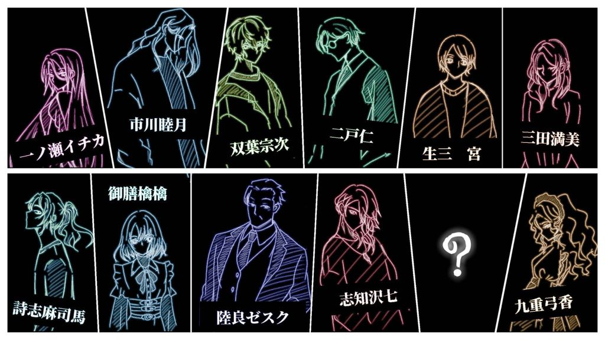
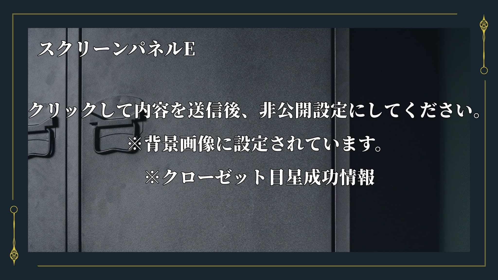
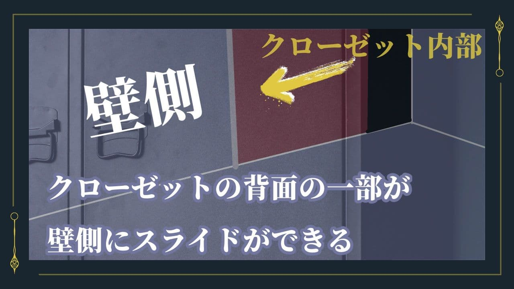

スクリーンパネル
スクリーンパネルを確認
※指示がないスクリーンパネルを開くことはネタバレに繫がります。ご注意ください。スクリーンパネルA

スクリーンパネルB

スクリーンパネルC

スクリーンパネルD ※ネタバレ注意
ネタバレ注意のためワンクッションあけています。
スクリーンパネルDの指示があればクリック

スクリーンパネルE ※ネタバレ注意
ネタバレ注意のためワンクッションあけています。
スクリーンパネルEの指示があればクリック


スクリーンパネルF ※ネタバレ注意
ネタバレ注意のためワンクッションあけています。
スクリーンパネルFの指示があればクリック

メモを確認
メモ１_詩志麻の話要約
【メモ１】
詩志麻の話＊＊＊
遺体 ：倉庫にある
８の部屋 ：殺人犯の部屋？
真夜中 ：いずれも犯行は夜中
第一発見者：２２～２４日は九重
部屋の鍵 ：各自と九重がマスターキーを持っている
メモ２_主催者からの挑戦状_HO解き明かすもの
【メモ２】
＜主催者からの挑戦状＞
親愛なる 客人へ
お越しいただき、誠に感謝する。我がルドベキアの館へようこそ。日頃の活躍は聞いている。そこで、ぜひ、ここでも披露していただきたい。この館で起こった真相を解き明かしてくれないだろうか。もちろん、報酬は金とルドベキアの館から外へと出る方法だ。
事件の真相がわかったなら、人を集め書斎にて披露してほしい。ただし、解き明かすのは、一度きり。何度も答え合わせをするなど無粋な真似はしてほしくない。
もし、時間を待つというならそれでもいい。だが、安全は保証しない。この館には人殺しがいるのだから。
命が尽きる前に、その素晴らしい才能を見せてくれると嬉しい。
メモ３_主催者からの挑戦状_HO支え繋ぐもの
【メモ３】
＜主催者からの挑戦状＞
親愛なる 客人へ
お越しいただき、誠に感謝する。我がルドベキアの館へようこそ。
君のその支える力を私は評価している。そこで、君には支える情報をあげよう。
「にくもけね」
もし、最後のその先で阻まれたとき、この言葉が手助けになるだろう。この言葉を使うことがないことを祈る、なんせつまらない結果だとわかるからだ。アルメリアの花が目印だ。その向こうへ行くときには、気を付けてほしい。事件の解決をすること、使用人を連れていくこと。この２つが鍵となる。それと、もう１つ、ハナズオウ最後にしたほうがいい。
もし、時間を待つというならそれでもいい。
だが、安全は保証しない。この館には人殺しがいるのだから。
きみたちの命が尽きる前に、その素晴らしい才能を見せてくれると嬉しい。
【注意事項】
※「にくもけね」に関してはエクストラエンドへの追加謎となります。この謎は通常の想定ルートでは、解く必要はありません。
また、最終0328探索⑤のあとに解きたい人の為のヒントが表示されます。
メモ４
【0325－空色の封筒】
十二ヶ月の花や草木が描かれた札をするあなたに恋をして、両目を差し出した。差し出した数だけ結ばれた。なおも欲するわたしにあなたは嘲笑うような声で告げたのだ。「わたしの名を答えてみせろ」と。
わたしは鏡越しに見るあなたが好きだった。
両目がない私はもう見ることはできないけれど。あなたのいる方へと振り向き口を一度開いた。
あなたが微笑んだ気がした。見上げた先にあなたがいるのを感じる。わたしはあなたの名を告げた。
メモ５
【0325－詩志麻司馬の手紙】
見知らぬ客人へ
これを読んでいるってことは僕は死んでいるんだろうね。さて、僕がどんな死に方をしたにせよ。僕は殺された。犯人は分からない。この手紙はここに来た日に書いたからね。とりあえず、九重さんではない。それだけは言っておく。別に惚れたとかでもないから。九重さんはね、やってない人だからだよ。色々言いたいが、ルールがあってね。ルールについても基本的には開示できないんだ。
まあ、君達ならルールをみているかもしれないけど。ああ、見たといえば、９の部屋の額を見たかい？いろは歌でね。知っているかもしれないが、いろは歌はすべての仮名を一度ずつ使用している日本語版の完全パングラムなんだ。色んな部屋に飾られているものは面白い。良かったら僕の部屋も見てくれ。
あと、一つ頼みごとがしたい。実は僕には助手がいて、上杉君というのだが、僕が死んだこと連絡をしてほしいんだ。〒112-1457
神奈川県久留間市南雲411-2127。上杉で届くはずだ。よろしく頼むよ。
世紀の名探偵 詩志麻司馬
メモ６
【0327－九重の手紙】
九重が知っている規則
・仕事をする限り使用人は生きられる
・8の部屋は鍵をかけない
・8の部屋以外は鍵をかける
・ルールを口外してはいけない
・ルールは更新される場合がある（部屋に便箋が届く）
・探偵役が最後に語るまでに事件の真相を語ってはいけない
・探偵役の行動がこの実験の終了の合図になる
メモ６
【0327－九重の手紙】
九重が知っている規則
・仕事をする限り使用人は生きられる
・8の部屋は鍵をかけない
・8の部屋以外は鍵をかける
・ルールを口外してはいけない
・ルールは更新される場合がある（部屋に便箋が届く）
・探偵役が最後に語るまでに事件の真相を語ってはいけない
・探偵役の行動がこの実験の終了の合図になる
壁の額を確認
【１の部屋の額】
【１の部屋の額】
ルドベキア それは理由
ハナズオウ それは伝書鳩
ロゼリア それは何処にも無い
アルメリア それは不要
【２の部屋の額】
【２の部屋の額】
覚えていないのが2人
覚えているが数えていないが1人
数えられるが数えていないが2人
数えきれないのが1人
誰一人も忘れたくなかったのが1人
誰も忘れていないのが2人
やっていないのが3人
【３の部屋の額】
【３の部屋の額】
目で見る
耳で聞く
口で話す
手で伝え
足で進む
【４の部屋の額】
【４の部屋の額】
解き明かせ お前に謎を授けよう
血濡れるわ 不変の夢
殺して焼くは 骨村
身もひりついた
【５の部屋の額】
【５の部屋の額】
常識は心で学ぶもの
知識は目で学ぶもの
意識は心でするもの
認識は頭でするもの
良識は心で学ぶもの
見識は場で学ぶもの
【６の部屋の額】
【６の部屋の額】
己の考えが
正義だと
正しいことだと
当たり前だと
証明するのは難しい
【７の部屋の額】
【７の部屋の額】
古のモノにとらわれてはいけない
それは誤った指標なのだから
新しいモノがどこかにある
必要なものはタコの心臓と同じ数
ただし、それは解く必要がないもの
それは最後の手段
それは外への鍵
【８の部屋の額】
【８の部屋の額】
ルドベキアの館 ルール
・ルールを破れば報酬は貰えない
・使用人は仕事する限り対象には選んではいけない
・3通目で送付した招待状は肌見放さず持っていること
・ルールを口外してはいけない
・探偵役は最後の客人たちにやらせること
・８の部屋の招待客が犯人であると聞いたことにすること
・正面扉が開くまで館の中にいること
・探偵役の行動がこの実験の終了の合図になる
【９の部屋の額】
【９の部屋の額】
色は匂へど 散りぬるを
我が世誰ぞ 常ならむ
有為の奥山 今日越えて
浅き夢見し 酔ひもせず
図書館情報を確認
【書斎―図書館成功①】
【書斎―図書館成功①】
苗字や名前が載っている
８番目の招待客がいるとしたら、なにかヒントになるかもしれない
一部抜粋
四十八願 ―よいなら
八月朔日 ―ほずみ
八日刃 ―ようかば
八重嶌 ―やえしま
八雲 ―やくも
新八 ―しんぱち
蜂屋 ―はちや
瑛人 ―えいと
夜野 ―やの
考えたらきりがないようだ
【書斎―図書館成功②】
【書斎―図書館成功②】
②花言葉集
花言葉が記載されている。
一部抜粋
ガーベラ ―希望・常に前進
ハナズオウ ―裏切り
ルドベキア ―正義・公平
ポピー ―慰め・感謝
アルメリア ―共感
ムスカリ ―失望
ハルジオン ―追憶の愛
ロゼリア ―悪意
【書斎―図書館成功③】
【書斎―図書館成功③】
事件スクラップ３
1年前に起きた強盗傷害事件記事
内容の要約
①犯人の名前は八瀬 栄斗（はせ えいと）。23歳。
②過去少年院に入っていた。再犯であり現在逃走中。
③被害者は精神的ショックから喋れなくなってしまったらしい。
【書斎―図書館成功④】
【書斎―図書館成功④】
事件スクラップ２
5年前に起きた事件の記事のようだ。
内容の要約
①被害者は5名。全員瞳がくり抜かれていた
②3人目から死者がでており、警察は連続殺人事件として捜査したが未解決
③眼窩上縁など目の周りの骨に、特殊な傷跡がある
【書斎―図書館成功⑤】
【書斎―図書館成功⑤】
事件のスクラップ１
10年前に起きた集団自殺のオカルト記事がある。
内容の要約
①10年前、集団自殺の発端は宗教団体
②死は救済である。すべての生命には必ず終わりがありそれこそが平等の安寧とその団体では考えられていた。
③その事件では一人生き残った少年がおり、そのものは神の使者として生まれた時から崇められていた。
④生き残った少年は未成年であることから名前は伏せられている。
⑤記者はその少年をまさしく神の使者であったと記している。
【書斎―図書館成功⑥】
【書斎―図書館成功⑥】
昔ながらの暗号ロジック
①アナグラム →言葉の入れ替え
※あきとかせ→ときあかせ
②シーザー暗号→言葉のずらし（あいうえお表の1段上の文字を読む等）
※例：なくいきそ→ときあかせ
③上杉暗号→7×７マスにいろは歌を順番にあてはめ、縦横のマス数で表すもの
例：１１→い １２→ろ ２１→ち
【書斎―図書館成功⑦】
【書斎―図書館成功⑦】
オカルト雑誌の切り抜きを見つける。
「これほどまでの残酷な優しさは見たことがあるだろうか」
記事の抜粋
町田舎にて、世にも恐ろしい事件が発生しました。
ワラキア・ブラムによる集団食人事件です。ブラム氏は、その町では古くから続く資産家で彼は難病を患っていました。供述から、健康な肉体を食せば、身体が良くなると聞いた。試す価値はあると思った。と話しているとのこと。
また、彼は自分の愛する町民や使用人、家族の食事にも人間の一部を使用した料理を提供していたようです。彼の善意から長く健やかに生きるようにと。
町民にも家族にも愛された彼でしたが、何がきっかけだったのか、真相は明らかになっていません。
【書斎―図書館成功⑧】
【書斎―図書館成功⑧】
オカルト雑誌を見つける。
「死神探偵見事に容疑者死亡で難事件を解決！？」
記事の抜粋
某日起きた女児誘拐殺人事件ですが、詩志麻探偵が関わった結果容疑者死亡となりました。容疑者死亡後、事件が起きなくなったことから巷では容疑者死亡による事件が解決されたと話題になっております。
詩志麻探偵は「僕としては、犯人にきちんと罪を償ってほしかったのですが、残念でなりません」とのこと。
容疑者の死亡状況詳細は伏せられておりますが、関係者から極秘に入手した情報によりますと容疑者は女児誘拐殺人事件の殺害手口を真似た方法で殺害されているようです。これは被害者による怨念なのか！